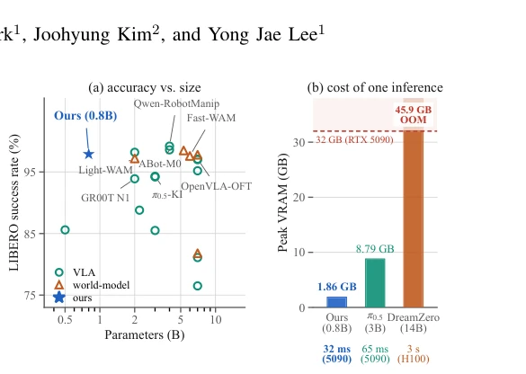
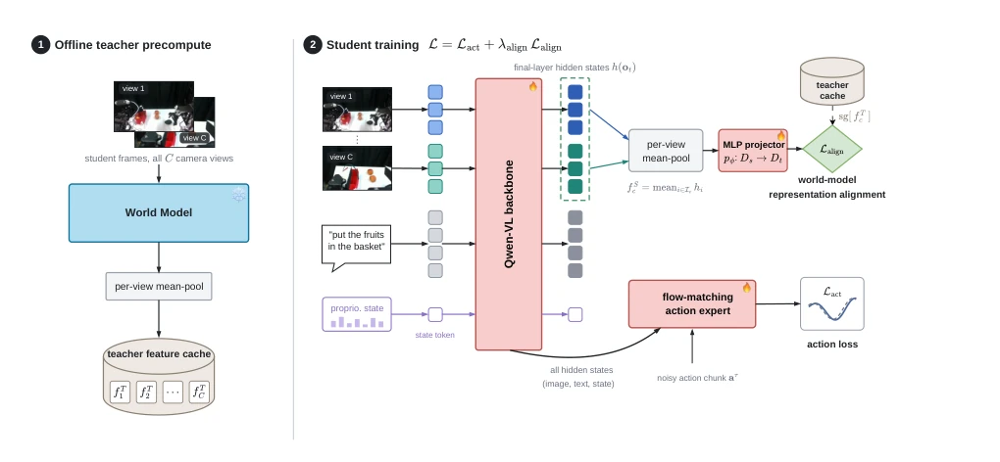
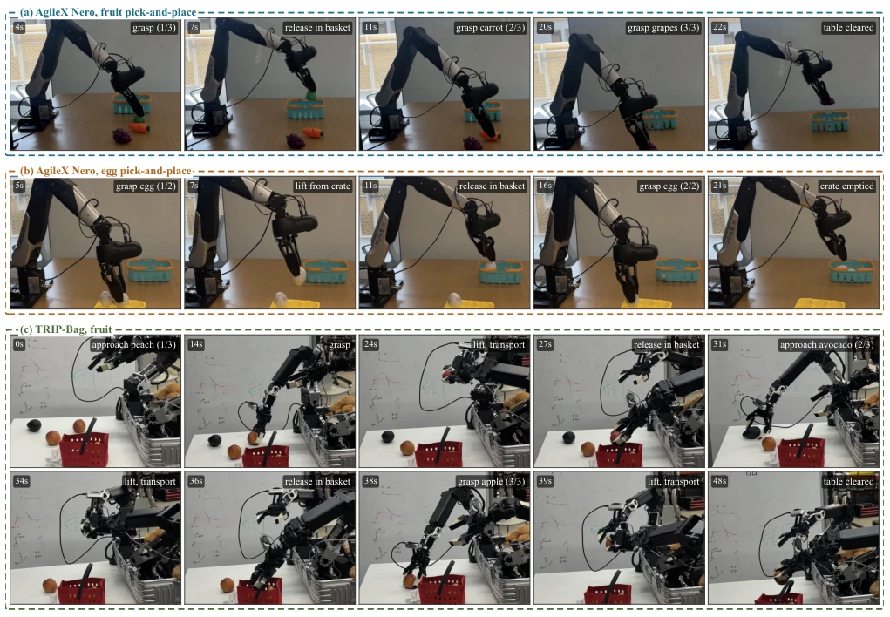
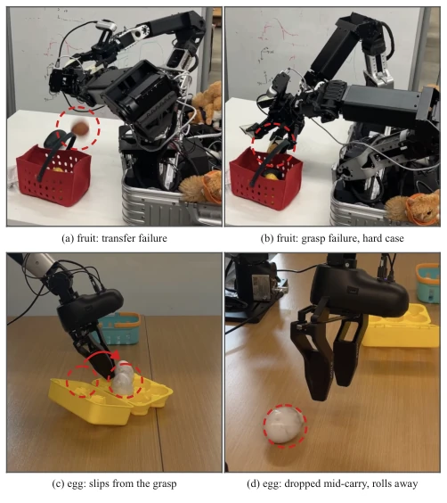

This paper attempts a "substitution trick": distilling the "brain" of a massive World Model into a compact VLA, without wanting to pay the compute tax at inference time. The authors claim the 0.8B student model can inherit the World Model's physical grounding while maintaining VLA inference speed. This "offline cache + feature alignment" trick is indeed clever, turning expensive future prediction into cheap feature imitation. But do not expect it to solve all hallucination problems; the improvement on real robots is stable, but the magnitude is only 2-3 percentage points, belonging to "icing on the cake" rather than "bringing the dead back to life". Most ironically, the teacher they use, Cosmos3-Nano, is itself a large model; although not loaded at inference, pre-computation still costs GPU time. However, running at 32ms on consumer-grade GPUs while matching a 4B model, this cost-performance ratio is indeed much stronger than WAMs that take seconds for inference.
Current VLA models, although strong in semantic understanding, lack explicit modeling of physical world evolution, leading to extreme fragility to environmental perturbations (such as lighting, viewpoint) [5]. Relying solely on data coverage to improve robustness is both expensive and insufficient. On the other hand, World Models achieve better causal grounding through future prediction, but the computational cost of "rolling forward the future" is too high to enter the control loop [6]. For example, DreamZero requires 3 seconds/inference, while VLA only needs tens of milliseconds [6]. This contradiction between "robustness" and "real-time performance" is the core pain point. Existing work attempts to balance through distillation or optimization, but often sacrifices architectural simplicity or increases deployment complexity [19]. This paper aims to decouple "knowledge" and "generation", allowing lightweight policies to directly inherit the World Model's representational capability without bearing its inference overhead.

Fig. 1. A 0.8B policy at the accuracy of models several times its size. (a) LIBERO four-suite mean success rate against parameter count. (b) What one inference costs, against the 32 GB of a consumer RTX 5090.
方法Method
整体流程分为离线教师缓存与在线学生训练两阶段。首先，冻结一个预训练的世界模型（如 Cosmos3-Nano）作为教师，在训练集上运行一次，提取每帧图像 token 的 pooled features 并写入内存映射缓存，训练时不再加载教师权重。学生模型采用 QwenGR00T 架构，包含视觉语言骨干和流匹配动作专家。训练目标由两部分组成：标准的动作预测损失 $L_{act}$ 和新增的特征对齐损失 $L_{align}$。$L_{align}$ 使用余弦相似度，强制学生模型的图像 token 隐藏状态与教师缓存中的特征方向一致，通过一个轻量级 MLP 投影器适配维度。关键创新在于：教师完全离线，训练无显存负担；对齐仅作用于视觉表征，不共享动作参数化；部署时移除对齐头，保持与原始 VLA 架构一致。这种设计确保了推理延迟与未蒸馏基线完全相同，实现了“训练时像世界模型，推理时像 VLA”。
The overall process is divided into two stages: offline teacher caching and online student training. First, freeze a pre-trained World Model (such as Cosmos3-Nano) as the teacher, run once on the training set, extract pooled features of image tokens per frame and write to memory-mapped cache, teacher weights are no longer loaded during training. The student model adopts the QwenGR00T architecture, containing visual-language backbone and flow-matching action experts. The training objective consists of two parts: standard action prediction loss $L_{act}$ and the added feature alignment loss $L_{align}$. $L_{align}$ uses cosine similarity, forcing the student model's image token hidden states to align with the feature direction in the teacher cache, adapting dimensions through a lightweight MLP projector. The key innovation lies in: teacher is completely offline, training has no memory burden; alignment acts only on visual representation, not sharing action parameterization; remove alignment head at deployment, maintaining consistency with original VLA architecture. This design ensures inference latency is exactly the same as the undistilled baseline, achieving "like a World Model during training, like a VLA during inference".

Fig. 2. Overview of the method. Left: the frozen teacher world model feature extraction pipeline. Right: the training pipeline for the student VLA.
On LIBERO and RoboCasa-GR1 simulation benchmarks, the 0.8B distilled model achieves 97.9% and 50.5% success rates respectively, improving by 2.6 and 2.3 percentage points compared to the undistilled baseline, performance close to 4B model. Real robot experiments cover single-arm (AgileX Nero) and dual-arm (TRIP-Bag) platforms; in fruit grasping and egg transport tasks, the distilled strategy is significantly better than the baseline, especially on the egg task (prone to slipping), recovering 4/7 of the failure rate. Ablation studies show the method is robust to different student scales, backbones, and teacher models (such as Fast-WAM, V-JEPA2). Figure 1 shows its cost-performance advantage, Figures 3 and 4 intuitively present success and typical failure modes (such as grasping slip) in real scenarios, proving the improvement mainly stems from representation rather than architecture bloat.

Fig. 3. Successful rollouts of the distilled 0.8B student on the three real-robot tasks, recorded from a third-person camera. Each dashed box is one episode: (a) fruit and (b) egg pick-and-place on the AgileX Nero, and (c) the fruit task on TRIP-Bag.

Fig. 4. Failure modes, fruit (top) and egg (bottom); the ring marks the failure. (a) Dropped before the receptacle. (b) Closed on the rim, not the fruit. (c) Egg slips from the grasp. (d) Egg slips mid-carry.